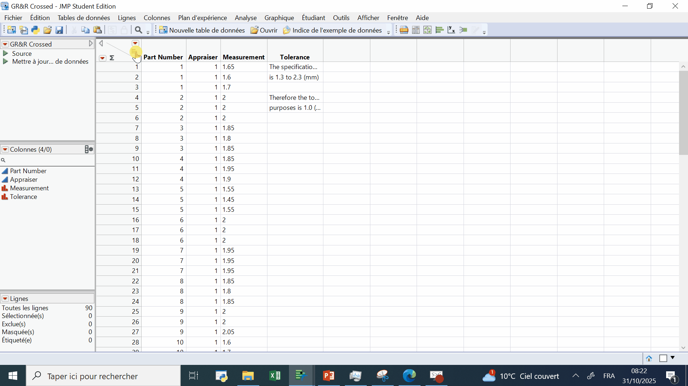
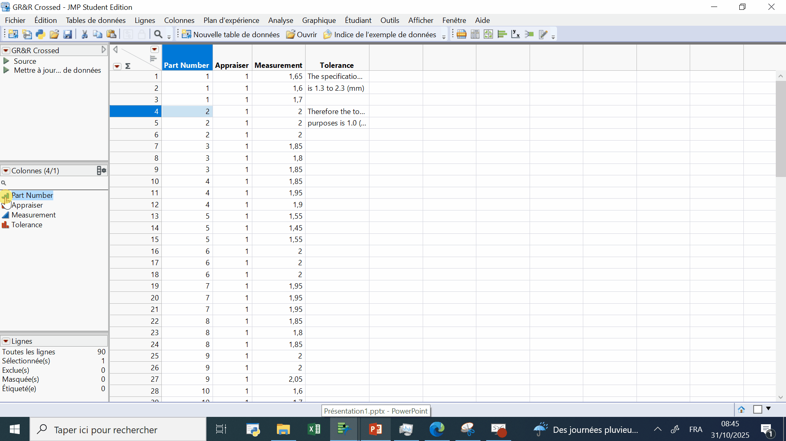

Procédure 02 · Démarrer
Définir le type de modélisation des colonnes
Procédure pas à pas
- Ouvrir la table de données JMP.
- Dans le volet Colonnes, repérer l’icône de type de modélisation de la variable.
- Cliquer sur l’icône et choisir le type adapté (continu, ordinal ou nominal).
- Vérifier ce choix avant toute analyse : le type de modélisation détermine les analyses accessibles.
Jeu de données / résultat
Une variable mesurée numériquement est en général de type continu.
Démonstrations animées dans JMP
Animations extraites du PowerPoint « Lean Six Sigma avec JMP 003 ». Elles complètent les étapes numérotées ci-dessus.

